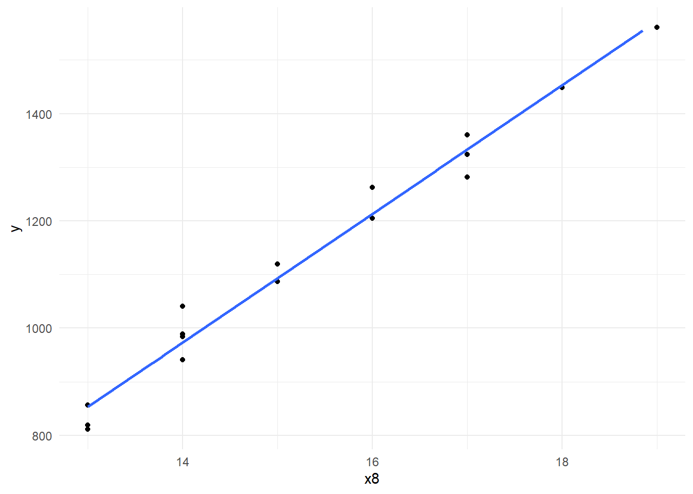

library(tidyverse)
library(readxl)
library(lmtest)
library(tseries)
library(xtable)
library(patchwork)Projekt_kod
Biblioteki
Wczytywanie danych i czyszczenie
dane <- read_xlsx("../Ekonometria_projekt/dane/Dane2.xlsx")
dane# A tibble: 16 × 12
L.p Lata `y - B+R na 1 mieszkanca` `x1 - PKB per capita`
<dbl> <dbl> <dbl> <dbl>
1 1 2008 811. 32.1
2 2 2009 819 31
3 3 2010 856. 32.6
4 4 2011 941. 34.2
5 5 2012 984. 34.8
6 6 2013 989. 35.6
7 7 2014 1040. 36.9
8 8 2015 1087. 37.8
9 9 2016 1119. 38.8
10 10 2017 1204. 40.3
11 11 2018 1263. 41.4
12 12 2019 1324. 42.5
13 13 2020 1282. 41.5
14 14 2021 1360. 44.2
15 15 2022 1449. 47.2
16 16 2023 1561. 49.5
# ℹ 8 more variables: `x2 - Stopa procentowa` <dbl>,
# `x3 - stopa inflacji` <dbl>, `x4 - Liczba_studentów na 1000 osób` <dbl>,
# `x5 - Wydatki_na_edukację_wyższą_na_osobę` <dbl>,
# `x6 - Liczba_zarejstrowanych_startapów_w_1000` <dbl>,
# `x7 - Liczba_zgłoszonych_patentów_w_1000` <dbl>,
# `x8 - Liczba osoób zatrudnionych w R&D na 1000 osób pracujących` <dbl>,
# `x9 - Stopa_bezrobocia` <dbl>Czyszczenie danych
dane <- dane %>%
rename(y = 3) %>%
rename_with(.cols = 4:ncol(.), .fn = ~ paste0("x", seq_along(.))) %>%
mutate(
x4 = round(x4,2),
x6 = round(x6,2),
x7 = round(x7,2),
x8 = round(x8,1)
)
dane# A tibble: 16 × 12
L.p Lata y x1 x2 x3 x4 x5 x6 x7 x8 x9
<dbl> <dbl> <dbl> <dbl> <dbl> <dbl> <dbl> <dbl> <dbl> <dbl> <dbl> <dbl>
1 1 2008 811. 32.1 0.422 2.63 24.7 443. 687. 49.5 12.5 7.51
2 2 2009 819 31 0.0485 0.31 25.9 474. 716. 47.6 12.8 7.88
3 3 2010 856. 32.6 0.0304 1.1 27.1 503. 720. 47.5 13.1 7.04
4 4 2011 941. 34.2 0.0617 2.08 29.7 544. 679. 47.2 13.9 5.97
5 5 2012 984. 34.8 0.0151 2.01 31.1 560. 619. 46.9 14.2 5.37
6 6 2013 989. 35.6 0 1.5 32.4 574. 616. 47.6 14 5.32
7 7 2014 1040. 36.9 -0.011 0.91 33.3 595. 586. 48.2 14.3 4.98
8 8 2015 1087. 37.8 -0.0247 0.51 33.8 612. 572. 47.4 15 4.61
9 9 2016 1119. 38.8 -0.045 0.49 34.1 633. 554. 48.5 15.3 4.10
10 10 2017 1204. 40.3 -0.047 1.51 34.4 655. 550. 47.8 15.8 3.78
11 11 2018 1263. 41.4 -0.047 1.73 34.6 691. 542. 46.6 16.2 3.38
12 12 2019 1324. 42.5 -0.0508 1.45 34.8 734. 551. 46.6 16.7 3.16
13 13 2020 1282. 41.5 -0.0584 0.14 35.4 775. 544. 42.3 16.9 3.88
14 14 2021 1360. 44.2 -0.0584 3.07 35.4 808. 583. 39.8 17.4 3.59
15 15 2022 1449. 47.2 0.0198 6.87 34.8 846. 555. 37.2 17.9 3.12
16 16 2023 1561. 49.5 0.489 5.95 34.4 903. 593. 38.5 18.7 3.07Regresja Krokowa
Krok 1 (x4)
model <- lm(y ~ x1 + x2 + x3 + x4 + x5 + x6 + x7 + x8 + x9, data = dane)
summary(model) #%>% xtable()
Call:
lm(formula = y ~ x1 + x2 + x3 + x4 + x5 + x6 + x7 + x8 + x9,
data = dane)
Residuals:
Min 1Q Median 3Q Max
-22.121 -3.443 1.300 3.937 14.517
Coefficients:
Estimate Std. Error t value Pr(>|t|)
(Intercept) -1749.0628 1272.9611 -1.374 0.219
x1 10.2187 10.8280 0.944 0.382
x2 -60.2921 52.1994 -1.155 0.292
x3 14.0124 13.4814 1.039 0.339
x4 -1.4569 8.5694 -0.170 0.871
x5 0.8534 0.5707 1.495 0.185
x6 -0.1724 0.2411 -0.715 0.501
x7 17.7324 11.4825 1.544 0.173
x8 72.6840 38.2560 1.900 0.106
x9 28.6619 44.4050 0.645 0.543
Residual standard error: 12.65 on 6 degrees of freedom
Multiple R-squared: 0.9988, Adjusted R-squared: 0.9969
F-statistic: 544 on 9 and 6 DF, p-value: 4.901e-08Krok 2 (x6)
model <- lm(y ~ x1 + x2 + x3 + x5 + x6 + x7 + x8 + x9, data = dane)
summary(model) #%>% xtable()
Call:
lm(formula = y ~ x1 + x2 + x3 + x5 + x6 + x7 + x8 + x9, data = dane)
Residuals:
Min 1Q Median 3Q Max
-22.104 -2.634 1.023 3.579 15.360
Coefficients:
Estimate Std. Error t value Pr(>|t|)
(Intercept) -1927.7440 666.5711 -2.892 0.0232 *
x1 9.7423 9.7065 1.004 0.3490
x2 -62.3736 47.0922 -1.324 0.2269
x3 15.3907 9.9964 1.540 0.1675
x5 0.8503 0.5294 1.606 0.1523
x6 -0.1758 0.2230 -0.789 0.4563
x7 18.8018 8.9153 2.109 0.0729 .
x8 77.5355 23.6465 3.279 0.0135 *
x9 34.6241 25.2797 1.370 0.2131
---
Signif. codes: 0 '***' 0.001 '**' 0.01 '*' 0.05 '.' 0.1 ' ' 1
Residual standard error: 11.74 on 7 degrees of freedom
Multiple R-squared: 0.9988, Adjusted R-squared: 0.9974
F-statistic: 710.6 on 8 and 7 DF, p-value: 1.744e-09Krok 3 (x2)
model <- lm(y ~ x1 + x2 + x3 + x5 + x7 + x8 + x9, data = dane)
summary(model) #%>% xtable()
Call:
lm(formula = y ~ x1 + x2 + x3 + x5 + x7 + x8 + x9, data = dane)
Residuals:
Min 1Q Median 3Q Max
-21.959 -1.588 0.287 4.861 14.196
Coefficients:
Estimate Std. Error t value Pr(>|t|)
(Intercept) -1654.6934 555.9330 -2.976 0.0177 *
x1 13.6695 8.1319 1.681 0.1313
x2 -46.6969 41.6681 -1.121 0.2949
x3 10.0419 7.1668 1.401 0.1987
x5 0.6176 0.4290 1.440 0.1879
x7 14.5225 6.9038 2.104 0.0686 .
x8 70.9952 21.6142 3.285 0.0111 *
x9 18.8015 15.0070 1.253 0.2456
---
Signif. codes: 0 '***' 0.001 '**' 0.01 '*' 0.05 '.' 0.1 ' ' 1
Residual standard error: 11.46 on 8 degrees of freedom
Multiple R-squared: 0.9987, Adjusted R-squared: 0.9975
F-statistic: 852.3 on 7 and 8 DF, p-value: 7.523e-11Krok 4 (x9)
model <- lm(y ~ x1 + x3 + x5 + x7 + x8 + x9, data = dane)
summary(model) #%>% xtable()
Call:
lm(formula = y ~ x1 + x3 + x5 + x7 + x8 + x9, data = dane)
Residuals:
Min 1Q Median 3Q Max
-22.2179 -3.8446 0.0217 4.1111 14.1284
Coefficients:
Estimate Std. Error t value Pr(>|t|)
(Intercept) -1181.3665 366.5986 -3.223 0.0104 *
x1 13.8767 8.2446 1.683 0.1266
x3 5.3335 5.8881 0.906 0.3886
x5 0.4253 0.3987 1.067 0.3139
x7 9.4246 5.2667 1.789 0.1072
x8 67.6435 21.7085 3.116 0.0124 *
x9 5.0299 8.7358 0.576 0.5789
---
Signif. codes: 0 '***' 0.001 '**' 0.01 '*' 0.05 '.' 0.1 ' ' 1
Residual standard error: 11.62 on 9 degrees of freedom
Multiple R-squared: 0.9985, Adjusted R-squared: 0.9974
F-statistic: 966.7 on 6 and 9 DF, p-value: 4.044e-12Krok 5 (x3)
model <- lm(y ~ x1 + x3 + x5 + x7 + x8, data = dane)
summary(model) #%>% xtable()
Call:
lm(formula = y ~ x1 + x3 + x5 + x7 + x8, data = dane)
Residuals:
Min 1Q Median 3Q Max
-22.5568 -3.2011 -0.2807 2.5416 15.7535
Coefficients:
Estimate Std. Error t value Pr(>|t|)
(Intercept) -997.1959 173.0300 -5.763 0.000182 ***
x1 14.7312 7.8342 1.880 0.089468 .
x3 4.4976 5.5123 0.816 0.433556
x5 0.3627 0.3705 0.979 0.350797
x7 7.6059 4.0710 1.868 0.091262 .
x8 63.1912 19.5949 3.225 0.009100 **
---
Signif. codes: 0 '***' 0.001 '**' 0.01 '*' 0.05 '.' 0.1 ' ' 1
Residual standard error: 11.23 on 10 degrees of freedom
Multiple R-squared: 0.9984, Adjusted R-squared: 0.9976
F-statistic: 1243 on 5 and 10 DF, p-value: 1.252e-13Krok 6 (x5)
model <- lm(y ~ x1 + x5 + x7 + x8, data = dane)
summary(model) #%>% xtable()
Call:
lm(formula = y ~ x1 + x5 + x7 + x8, data = dane)
Residuals:
Min 1Q Median 3Q Max
-23.897 -4.414 0.295 4.319 14.360
Coefficients:
Estimate Std. Error t value Pr(>|t|)
(Intercept) -882.8827 99.9831 -8.830 2.52e-06 ***
x1 20.4193 3.5194 5.802 0.000119 ***
x5 0.1575 0.2680 0.588 0.568613
x7 4.6602 1.8522 2.516 0.028681 *
x8 59.3450 18.7282 3.169 0.008938 **
---
Signif. codes: 0 '***' 0.001 '**' 0.01 '*' 0.05 '.' 0.1 ' ' 1
Residual standard error: 11.05 on 11 degrees of freedom
Multiple R-squared: 0.9983, Adjusted R-squared: 0.9977
F-statistic: 1602 on 4 and 11 DF, p-value: 3.966e-15Krok 7 (istotne)
model_koncowy <- lm(y ~ x1 + x7 + x8, data = dane)
summary(model_koncowy) #%>% xtable()
Call:
lm(formula = y ~ x1 + x7 + x8, data = dane)
Residuals:
Min 1Q Median 3Q Max
-23.919 -4.329 -1.490 5.956 14.949
Coefficients:
Estimate Std. Error t value Pr(>|t|)
(Intercept) -897.659 94.093 -9.540 5.94e-07 ***
x1 20.684 3.394 6.095 5.38e-05 ***
x7 3.891 1.275 3.052 0.01 *
x8 68.591 9.878 6.944 1.55e-05 ***
---
Signif. codes: 0 '***' 0.001 '**' 0.01 '*' 0.05 '.' 0.1 ' ' 1
Residual standard error: 10.75 on 12 degrees of freedom
Multiple R-squared: 0.9982, Adjusted R-squared: 0.9978
F-statistic: 2260 on 3 and 12 DF, p-value: < 2.2e-16Modele jednowymiarowe i trendy
Modele dla zmiennej x1
model_lin <- lm(x1 ~ L.p, data = dane)
model_parabola <- lm(x1 ~ L.p + I(L.p^2), data = dane)
model_hiperbola <- lm(x1 ~ I(1 / L.p), data = dane)
model_wykladniczy <- lm(log(x1) ~ L.p, data = dane)
model_potegowy <- lm(log(x1) ~ log(L.p), data = dane)
# R^2
r2_lin <- summary(model_lin)$r.squared
r2_parabola <- summary(model_parabola)$r.squared
r2_hiperbola <- summary(model_hiperbola)$r.squared
r2_wykladniczy <- summary(model_wykladniczy)$r.squared
r2_potegowy <- summary(model_potegowy)$r.squared
r2_vec <- c(Liniowy = r2_lin,
Paraboliczny = r2_parabola,
Hiperboliczny = r2_hiperbola,
Wykładniczy = r2_wykladniczy,
Potęgowy = r2_potegowy)
print(r2_vec) Liniowy Paraboliczny Hiperboliczny Wykładniczy Potęgowy
0.9617194 0.9757171 0.4382126 0.9748940 0.8236267 Predykcje dla x1
dane_pred <- dane %>%
mutate(
pred_parabola = predict(model_parabola),
pred_hiperbola = predict(model_hiperbola),
pred_wykladniczy = exp(predict(model_wykladniczy)),
pred_potegowy = exp(predict(model_potegowy))
)
dane_pred# A tibble: 16 × 16
L.p Lata y x1 x2 x3 x4 x5 x6 x7 x8 x9
<dbl> <dbl> <dbl> <dbl> <dbl> <dbl> <dbl> <dbl> <dbl> <dbl> <dbl> <dbl>
1 1 2008 811. 32.1 0.422 2.63 24.7 443. 687. 49.5 12.5 7.51
2 2 2009 819 31 0.0485 0.31 25.9 474. 716. 47.6 12.8 7.88
3 3 2010 856. 32.6 0.0304 1.1 27.1 503. 720. 47.5 13.1 7.04
4 4 2011 941. 34.2 0.0617 2.08 29.7 544. 679. 47.2 13.9 5.97
5 5 2012 984. 34.8 0.0151 2.01 31.1 560. 619. 46.9 14.2 5.37
6 6 2013 989. 35.6 0 1.5 32.4 574. 616. 47.6 14 5.32
7 7 2014 1040. 36.9 -0.011 0.91 33.3 595. 586. 48.2 14.3 4.98
8 8 2015 1087. 37.8 -0.0247 0.51 33.8 612. 572. 47.4 15 4.61
9 9 2016 1119. 38.8 -0.045 0.49 34.1 633. 554. 48.5 15.3 4.10
10 10 2017 1204. 40.3 -0.047 1.51 34.4 655. 550. 47.8 15.8 3.78
11 11 2018 1263. 41.4 -0.047 1.73 34.6 691. 542. 46.6 16.2 3.38
12 12 2019 1324. 42.5 -0.0508 1.45 34.8 734. 551. 46.6 16.7 3.16
13 13 2020 1282. 41.5 -0.0584 0.14 35.4 775. 544. 42.3 16.9 3.88
14 14 2021 1360. 44.2 -0.0584 3.07 35.4 808. 583. 39.8 17.4 3.59
15 15 2022 1449. 47.2 0.0198 6.87 34.8 846. 555. 37.2 17.9 3.12
16 16 2023 1561. 49.5 0.489 5.95 34.4 903. 593. 38.5 18.7 3.07
# ℹ 4 more variables: pred_parabola <dbl>, pred_hiperbola <dbl>,
# pred_wykladniczy <dbl>, pred_potegowy <dbl>Wykresy dla x1
p1 <- ggplot(dane, aes(x = L.p, y = x1)) +
geom_point() +
geom_smooth(method = "lm", formula = y ~ x, se = FALSE, color = "blue") +
ggtitle(paste0("Liniowy, R² = ", round(r2_lin, 4))) +
theme_minimal()
# 2. Paraboliczny
p2 <- ggplot(dane, aes(x = L.p, y = x1)) +
geom_point() +
geom_smooth(method = "lm", formula = y ~ x + I(x^2), se = FALSE, color = "red") +
ggtitle(paste0("Paraboliczny, R² = ", round(r2_parabola, 4))) +
theme_minimal()
# 3. Hiperbola
p3 <- ggplot(dane, aes(x = L.p, y = x1)) +
geom_point() +
geom_smooth(method = "lm", formula = y ~ I(1 / x), se = FALSE, color = "purple") +
ggtitle(paste0("Hiperboliczny, R² = ", round(r2_hiperbola, 4))) +
theme_minimal()
# 4. Wykładniczy
p4 <- ggplot(dane, aes(x = L.p, y = x1)) +
geom_point() +
geom_line(aes(y = exp(predict(model_wykladniczy))), color = "green") +
ggtitle(paste0("Wykładniczy, R² = ", round(r2_wykladniczy, 4))) +
theme_minimal()
# 5. Potęgowy
p5 <- ggplot(dane, aes(x = L.p, y = x1)) +
geom_point() +
geom_line(aes(y = exp(predict(model_potegowy))), color = "grey") +
ggtitle(paste0("Potęgowy, R² = ", round(r2_potegowy, 4))) +
theme_minimal()Wizualizacja
(p1 | p2) /
(p3 | p4 | p5)
Zapis grafiki dla x1
ggsave("modele_siatka_x1.png", p2, width = 10, height = 8, dpi = 300)Najlepszy model dla x1
summary(model_parabola)
Call:
lm(formula = x1 ~ L.p + I(L.p^2), data = dane)
Residuals:
Min 1Q Median 3Q Max
-2.2826 -0.0313 0.2545 0.4649 1.2220
Coefficients:
Estimate Std. Error t value Pr(>|t|)
(Intercept) 30.94905 0.77587 39.889 5.55e-15 ***
L.p 0.55817 0.21006 2.657 0.0197 *
I(L.p^2) 0.03288 0.01201 2.737 0.0169 *
---
Signif. codes: 0 '***' 0.001 '**' 0.01 '*' 0.05 '.' 0.1 ' ' 1
Residual standard error: 0.9079 on 13 degrees of freedom
Multiple R-squared: 0.9757, Adjusted R-squared: 0.972
F-statistic: 261.2 on 2 and 13 DF, p-value: 3.195e-11Predykcja x1 na rok 2024
rok_2024 <- 17
nowy_rok <- data.frame(L.p = rok_2024)
pred_2024 <- predict(model_parabola, newdata = nowy_rok)
pred_2024 1
49.9413 Modele dla zmiennej x7
model_lin_x7 <- lm(x7 ~ L.p, data = dane)
model_parabola_x7 <- lm(x7 ~ L.p + I(L.p^2), data = dane)
model_hiperbola_x7 <- lm(x7 ~ I(1 / L.p), data = dane)
model_wykladniczy_x7 <- lm(log(x7) ~ L.p, data = dane)
model_potegowy_x7 <- lm(log(x7) ~ log(L.p), data = dane)
# R^2
r2_lin_x7 <- summary(model_lin_x7)$r.squared
r2_parabola_x7 <- summary(model_parabola_x7)$r.squared
r2_hiperbola_x7 <- summary(model_hiperbola_x7)$r.squared
r2_wykladniczy_x7 <- summary(model_wykladniczy_x7)$r.squared
r2_potegowy_x7 <- summary(model_potegowy_x7)$r.squared
r2_vec_x7 <- c(
Liniowy_x7 = r2_lin_x7,
Paraboliczny_x7 = r2_parabola_x7,
Hiperboliczny_x7 = r2_hiperbola_x7,
Wykładniczy_x7 = r2_wykladniczy_x7,
Potęgowy_x7 = r2_potegowy_x7
)
print(r2_vec_x7) Liniowy_x7 Paraboliczny_x7 Hiperboliczny_x7 Wykładniczy_x7
0.6292112 0.8575833 0.2004749 0.6208703
Potęgowy_x7
0.3906674 Predykcje dla x7
dane_pred_x7 <- dane %>%
mutate(
pred_parabola_x7 = predict(model_parabola_x7),
pred_hiperbola_x7 = predict(model_hiperbola_x7),
pred_wykladniczy_x7 = exp(predict(model_wykladniczy_x7)),
pred_potegowy_x7 = exp(predict(model_potegowy_x7))
)
dane_pred_x7# A tibble: 16 × 16
L.p Lata y x1 x2 x3 x4 x5 x6 x7 x8 x9
<dbl> <dbl> <dbl> <dbl> <dbl> <dbl> <dbl> <dbl> <dbl> <dbl> <dbl> <dbl>
1 1 2008 811. 32.1 0.422 2.63 24.7 443. 687. 49.5 12.5 7.51
2 2 2009 819 31 0.0485 0.31 25.9 474. 716. 47.6 12.8 7.88
3 3 2010 856. 32.6 0.0304 1.1 27.1 503. 720. 47.5 13.1 7.04
4 4 2011 941. 34.2 0.0617 2.08 29.7 544. 679. 47.2 13.9 5.97
5 5 2012 984. 34.8 0.0151 2.01 31.1 560. 619. 46.9 14.2 5.37
6 6 2013 989. 35.6 0 1.5 32.4 574. 616. 47.6 14 5.32
7 7 2014 1040. 36.9 -0.011 0.91 33.3 595. 586. 48.2 14.3 4.98
8 8 2015 1087. 37.8 -0.0247 0.51 33.8 612. 572. 47.4 15 4.61
9 9 2016 1119. 38.8 -0.045 0.49 34.1 633. 554. 48.5 15.3 4.10
10 10 2017 1204. 40.3 -0.047 1.51 34.4 655. 550. 47.8 15.8 3.78
11 11 2018 1263. 41.4 -0.047 1.73 34.6 691. 542. 46.6 16.2 3.38
12 12 2019 1324. 42.5 -0.0508 1.45 34.8 734. 551. 46.6 16.7 3.16
13 13 2020 1282. 41.5 -0.0584 0.14 35.4 775. 544. 42.3 16.9 3.88
14 14 2021 1360. 44.2 -0.0584 3.07 35.4 808. 583. 39.8 17.4 3.59
15 15 2022 1449. 47.2 0.0198 6.87 34.8 846. 555. 37.2 17.9 3.12
16 16 2023 1561. 49.5 0.489 5.95 34.4 903. 593. 38.5 18.7 3.07
# ℹ 4 more variables: pred_parabola_x7 <dbl>, pred_hiperbola_x7 <dbl>,
# pred_wykladniczy_x7 <dbl>, pred_potegowy_x7 <dbl>Wykresy dla x7
# 1. Liniowy
p1_x7 <- ggplot(dane, aes(x = L.p, y = x7)) +
geom_point() +
geom_smooth(method = "lm", formula = y ~ x, se = FALSE, color = "blue") +
ggtitle(paste0("Liniowy, R² = ", round(r2_lin_x7, 4))) +
theme_minimal()
# 2. Paraboliczny
p2_x7 <- ggplot(dane, aes(x = L.p, y = x7)) +
geom_point() +
geom_smooth(method = "lm", formula = y ~ x + I(x^2), se = FALSE, color = "red") +
ggtitle(paste0("Paraboliczny, R² = ", round(r2_parabola_x7, 4))) +
theme_minimal()
# 3. Hiperboliczny
p3_x7 <- ggplot(dane, aes(x = L.p, y = x7)) +
geom_point() +
geom_smooth(method = "lm", formula = y ~ I(1 / x), se = FALSE, color = "purple") +
ggtitle(paste0("Hiperboliczny, R² = ", round(r2_hiperbola_x7, 4))) +
theme_minimal()
# 4. Wykładniczy
p4_x7 <- ggplot(dane, aes(x = L.p, y = x7)) +
geom_point() +
geom_line(aes(y = exp(predict(model_wykladniczy_x7))), color = "green") +
ggtitle(paste0("Wykładniczy, R² = ", round(r2_wykladniczy_x7, 4))) +
theme_minimal()
# 5. Potęgowy
p5_x7 <- ggplot(dane, aes(x = L.p, y = x7)) +
geom_point() +
geom_line(aes(y = exp(predict(model_potegowy_x7))), color = "grey") +
ggtitle(paste0("Potęgowy, R² = ", round(r2_potegowy_x7, 4))) +
theme_minimal()Wizualizacja x7
razem <- (p1_x7 | p2_x7) /
(p3_x7 | p4_x7 | p5_x7)Zapis grafiki dla x7
ggsave("modele_siatka_x7.png", razem, width = 10, height = 8, dpi = 300)Najlepszy model dla x7
summary(model_parabola_x7)
Call:
lm(formula = x7 ~ L.p + I(L.p^2), data = dane)
Residuals:
Min 1Q Median 3Q Max
-2.2318 -1.0697 -0.3301 1.2534 2.4545
Coefficients:
Estimate Std. Error t value Pr(>|t|)
(Intercept) 46.21205 1.33121 34.714 3.33e-14 ***
L.p 0.95951 0.36042 2.662 0.01955 *
I(L.p^2) -0.09410 0.02061 -4.566 0.00053 ***
---
Signif. codes: 0 '***' 0.001 '**' 0.01 '*' 0.05 '.' 0.1 ' ' 1
Residual standard error: 1.558 on 13 degrees of freedom
Multiple R-squared: 0.8576, Adjusted R-squared: 0.8357
F-statistic: 39.14 on 2 and 13 DF, p-value: 3.149e-06 #%>% xtable()Predykcja x7 na rok 2024
rok_2024_x7 <- 17
nowy_rok_x7 <- data.frame(L.p = rok_2024_x7)
pred_2024_x7 <- predict(model_parabola_x7, newdata = nowy_rok_x7)
pred_2024_x7 1
35.3283 Modele dla zmiennej x8
model_lin_x8 <- lm(x8 ~ L.p, data = dane)
model_parabola_x8 <- lm(x8 ~ L.p + I(L.p^2), data = dane)
model_hiperbola_x8 <- lm(x8 ~ I(1 / L.p), data = dane)
model_wykladniczy_x8 <- lm(log(x8) ~ L.p, data = dane)
model_potegowy_x8 <- lm(log(x8) ~ log(L.p), data = dane)
# R^2
r2_lin_x8 <- summary(model_lin_x8)$r.squared
r2_parabola_x8 <- summary(model_parabola_x8)$r.squared
r2_hiperbola_x8 <- summary(model_hiperbola_x8)$r.squared
r2_wykladniczy_x8 <- summary(model_wykladniczy_x8)$r.squared
r2_potegowy_x8 <- summary(model_potegowy_x8)$r.squared
# Wektor R^2
r2_vec_x8 <- c(
Liniowy_x8 = r2_lin_x8,
Paraboliczny_x8 = r2_parabola_x8,
Hiperboliczny_x8 = r2_hiperbola_x8,
Wykładniczy_x8 = r2_wykladniczy_x8,
Potęgowy_x8 = r2_potegowy_x8
)
print(r2_vec_x8) Liniowy_x8 Paraboliczny_x8 Hiperboliczny_x8 Wykładniczy_x8
0.9847667 0.9903266 0.5024274 0.9890728
Potęgowy_x8
0.8671463 Predykcje dla x8
dane_pred_x8 <- dane %>%
mutate(
pred_parabola_x8 = predict(model_parabola_x8),
pred_hiperbola_x8 = predict(model_hiperbola_x8),
pred_wykladniczy_x8 = exp(predict(model_wykladniczy_x8)),
pred_potegowy_x8 = exp(predict(model_potegowy_x8))
)
dane_pred_x8# A tibble: 16 × 16
L.p Lata y x1 x2 x3 x4 x5 x6 x7 x8 x9
<dbl> <dbl> <dbl> <dbl> <dbl> <dbl> <dbl> <dbl> <dbl> <dbl> <dbl> <dbl>
1 1 2008 811. 32.1 0.422 2.63 24.7 443. 687. 49.5 12.5 7.51
2 2 2009 819 31 0.0485 0.31 25.9 474. 716. 47.6 12.8 7.88
3 3 2010 856. 32.6 0.0304 1.1 27.1 503. 720. 47.5 13.1 7.04
4 4 2011 941. 34.2 0.0617 2.08 29.7 544. 679. 47.2 13.9 5.97
5 5 2012 984. 34.8 0.0151 2.01 31.1 560. 619. 46.9 14.2 5.37
6 6 2013 989. 35.6 0 1.5 32.4 574. 616. 47.6 14 5.32
7 7 2014 1040. 36.9 -0.011 0.91 33.3 595. 586. 48.2 14.3 4.98
8 8 2015 1087. 37.8 -0.0247 0.51 33.8 612. 572. 47.4 15 4.61
9 9 2016 1119. 38.8 -0.045 0.49 34.1 633. 554. 48.5 15.3 4.10
10 10 2017 1204. 40.3 -0.047 1.51 34.4 655. 550. 47.8 15.8 3.78
11 11 2018 1263. 41.4 -0.047 1.73 34.6 691. 542. 46.6 16.2 3.38
12 12 2019 1324. 42.5 -0.0508 1.45 34.8 734. 551. 46.6 16.7 3.16
13 13 2020 1282. 41.5 -0.0584 0.14 35.4 775. 544. 42.3 16.9 3.88
14 14 2021 1360. 44.2 -0.0584 3.07 35.4 808. 583. 39.8 17.4 3.59
15 15 2022 1449. 47.2 0.0198 6.87 34.8 846. 555. 37.2 17.9 3.12
16 16 2023 1561. 49.5 0.489 5.95 34.4 903. 593. 38.5 18.7 3.07
# ℹ 4 more variables: pred_parabola_x8 <dbl>, pred_hiperbola_x8 <dbl>,
# pred_wykladniczy_x8 <dbl>, pred_potegowy_x8 <dbl>Wykresy dla x8
# 1. Liniowy
p1_x8 <- ggplot(dane, aes(x = L.p, y = x8)) +
geom_point() +
geom_smooth(method = "lm", formula = y ~ x, se = FALSE, color = "blue") +
ggtitle(paste0("Liniowy, R² = ", round(r2_lin_x8, 4))) +
theme_minimal()
# 2. Paraboliczny
p2_x8 <- ggplot(dane, aes(x = L.p, y = x8)) +
geom_point() +
geom_smooth(method = "lm", formula = y ~ x + I(x^2), se = FALSE, color = "red") +
ggtitle(paste0("Paraboliczny, R² = ", round(r2_parabola_x8, 4))) +
theme_minimal()
# 3. Hiperboliczny
p3_x8 <- ggplot(dane, aes(x = L.p, y = x8)) +
geom_point() +
geom_smooth(method = "lm", formula = y ~ I(1 / x), se = FALSE, color = "purple") +
ggtitle(paste0("Hiperboliczny, R² = ", round(r2_hiperbola_x8, 4))) +
theme_minimal()
# 4. Wykładniczy
p4_x8 <- ggplot(dane, aes(x = L.p, y = x8)) +
geom_point() +
geom_line(aes(y = exp(predict(model_wykladniczy_x8))), color = "green") +
ggtitle(paste0("Wykładniczy, R² = ", round(r2_wykladniczy_x8, 4))) +
theme_minimal()
# 5. Potęgowy
p5_x8 <- ggplot(dane, aes(x = L.p, y = x8)) +
geom_point() +
geom_line(aes(y = exp(predict(model_potegowy_x8))), color = "grey") +
ggtitle(paste0("Potęgowy, R² = ", round(r2_potegowy_x8, 4))) +
theme_minimal()Wizualizacja x8
razem <- (p1_x8 | p2_x8) /
(p3_x8 | p4_x8 | p5_x8)Zapis grafiki dla x8
ggsave("modele_siatka_x8.png", razem, width = 10, height = 8, dpi = 300)Najlepszy model dla x8
summary(model_parabola_x8)
Call:
lm(formula = x8 ~ L.p + I(L.p^2), data = dane)
Residuals:
Min 1Q Median 3Q Max
-0.26829 -0.10569 -0.06625 0.06497 0.37970
Coefficients:
Estimate Std. Error t value Pr(>|t|)
(Intercept) 12.324464 0.170019 72.489 < 2e-16 ***
L.p 0.270179 0.046031 5.869 5.51e-05 ***
I(L.p^2) 0.007195 0.002632 2.733 0.0171 *
---
Signif. codes: 0 '***' 0.001 '**' 0.01 '*' 0.05 '.' 0.1 ' ' 1
Residual standard error: 0.1989 on 13 degrees of freedom
Multiple R-squared: 0.9903, Adjusted R-squared: 0.9888
F-statistic: 665.4 on 2 and 13 DF, p-value: 8.058e-14#%>% xtable()Predykcja x8 na rok 2024
rok_2024_x8 <- 17
nowy_rok_x8 <- data.frame(L.p = rok_2024_x8)
pred_2024_x8 <- predict(model_parabola_x8, newdata = nowy_rok_x8)
pred_2024_x8 1
18.99696 Testy
Liniowość – Test RESEST
reset <- resettest(model_koncowy)
reset_df <- data.frame(
"Statystyka testowa" = reset$statistic,
"Wartość p" = reset$p.value,
"Stopnie swobody 1" = reset$parameter[1],
"Stopnie swobody 2" = reset$parameter[2],
check.names = FALSE
)
#xtable(reset_df, caption = "Wyniki testu RESET dla modelu końcowego", digits = 4)
reset
RESET test
data: model_koncowy
RESET = 0.44486, df1 = 2, df2 = 10, p-value = 0.653Homoskedastyczność - Test Goldfelda-Quandta
gq <- gqtest(model_koncowy)
gq_df <- data.frame(
`statystyka` = gq$statistic,
`df1` = gq$parameter[1],
`df2` = gq$parameter[2],
`p-wartość` = gq$p.value,
check.names = FALSE
)
#xtable(gq_df, caption = "Test Goldfelda–Quandta", digits = 4)
gq
Goldfeld-Quandt test
data: model_koncowy
GQ = 1.4041, df1 = 4, df2 = 4, p-value = 0.3751
alternative hypothesis: variance increases from segment 1 to 2Autokorelacja składników losowych – Test Durbina-Watsona
dw <- dwtest(model_koncowy)
dw
Durbin-Watson test
data: model_koncowy
DW = 1.5611, p-value = 0.04774
alternative hypothesis: true autocorrelation is greater than 0dw_df <- data.frame(
"statystyka" = dw$statistic,
"p-wartość" = dw$p.value,
check.names = FALSE
)
#xtable(dw_df, caption = "Test Durbina-Watsona", digits = 4)Rozkład normalny reszt – Test JBT
reszty <- resid(model_koncowy)
jbt <- jarque.bera.test(reszty)
model_JBT_df <- data.frame(
"statystyka" = jbt$statistic,
"p-wartość" = jbt$p.value,
check.names = FALSE
)
model_JBT_df statystyka p-wartość
X-squared 1.222036 0.5427981#xtable(model_JBT_df, caption = "Test Jarque-Bera", digits = 4)Badanie dobroci modelu
Dobroć dopasowania modelu do obserwacji
r2 <- summary(model_koncowy)$r.squared
adj_r2 <- summary(model_koncowy)$adj.r.squared
r2_table <- data.frame(
Wskaźnik = c("R-squared", "Adjusted R-squared"),
Wartość = round(c(r2, adj_r2), 4)
)
r2_table Wskaźnik Wartość
1 R-squared 0.9982
2 Adjusted R-squared 0.9978summary(model_koncowy)
Call:
lm(formula = y ~ x1 + x7 + x8, data = dane)
Residuals:
Min 1Q Median 3Q Max
-23.919 -4.329 -1.490 5.956 14.949
Coefficients:
Estimate Std. Error t value Pr(>|t|)
(Intercept) -897.659 94.093 -9.540 5.94e-07 ***
x1 20.684 3.394 6.095 5.38e-05 ***
x7 3.891 1.275 3.052 0.01 *
x8 68.591 9.878 6.944 1.55e-05 ***
---
Signif. codes: 0 '***' 0.001 '**' 0.01 '*' 0.05 '.' 0.1 ' ' 1
Residual standard error: 10.75 on 12 degrees of freedom
Multiple R-squared: 0.9982, Adjusted R-squared: 0.9978
F-statistic: 2260 on 3 and 12 DF, p-value: < 2.2e-16Współczynnik zmienności losowej – siła wpływu czynnika losowego
Se <- summary(model_koncowy)$sigma
y_mean <- mean(dane$y)
Ve <- (Se / y_mean)
Ve[1] 0.009507223Istotność prametrów
summary(model_koncowy)
Call:
lm(formula = y ~ x1 + x7 + x8, data = dane)
Residuals:
Min 1Q Median 3Q Max
-23.919 -4.329 -1.490 5.956 14.949
Coefficients:
Estimate Std. Error t value Pr(>|t|)
(Intercept) -897.659 94.093 -9.540 5.94e-07 ***
x1 20.684 3.394 6.095 5.38e-05 ***
x7 3.891 1.275 3.052 0.01 *
x8 68.591 9.878 6.944 1.55e-05 ***
---
Signif. codes: 0 '***' 0.001 '**' 0.01 '*' 0.05 '.' 0.1 ' ' 1
Residual standard error: 10.75 on 12 degrees of freedom
Multiple R-squared: 0.9982, Adjusted R-squared: 0.9978
F-statistic: 2260 on 3 and 12 DF, p-value: < 2.2e-16Prognoza Y^ na rok 2024
pred_data_set <- data.frame(
x1 = pred_2024,
x7 = pred_2024_x7,
x8 = pred_2024_x8
)
pred_Y <- predict(model_koncowy, newdata = pred_data_set)
pred_Y 1
1575.832